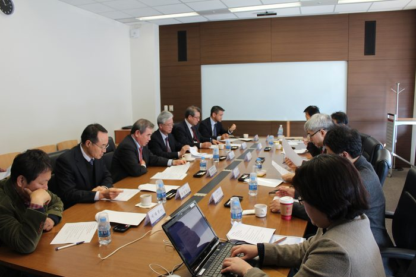
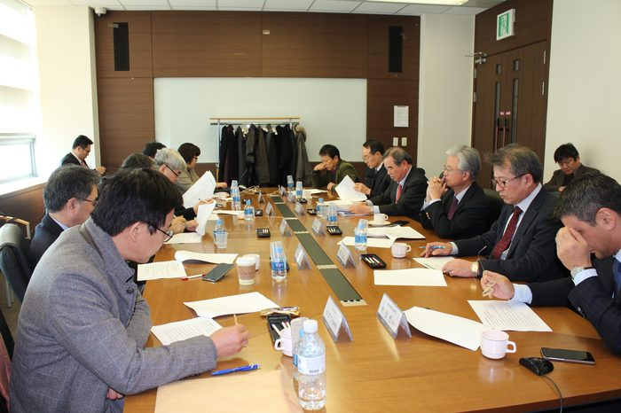
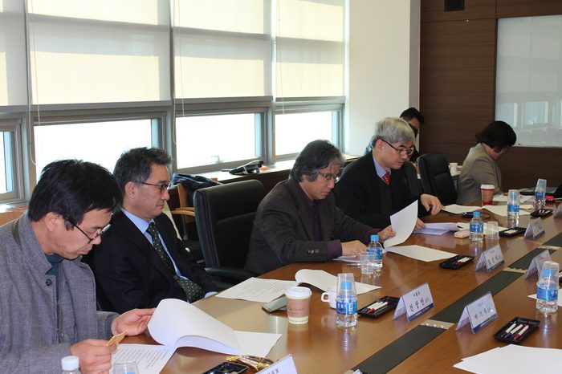
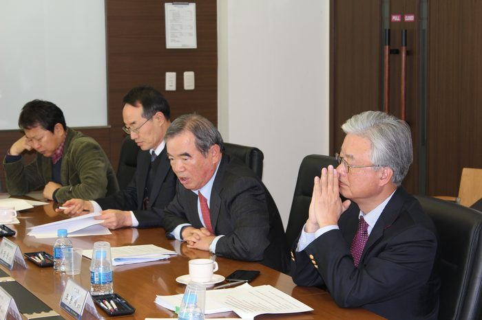

내용
박태준미래전략연구소 2014년 제2회 미래전략연구위원회
1. 일 시: 2014. 12. 9(화) 11:00 ~ 12:00
※ 오찬: 12:00 ~ 13:30
2. 장 소: 포스코 국제관 2층 소회의실(포항공대 내)
3. 안 건
〇 2015~2016년 미래전략연구 주제 선정
[토의 및 결정 사항]
▷ 미래전략연구 2015~2016년 연구 주제 선정
○ 계속연구: 2014년도 연구 주제인 ‘국가 지도자(엘리트) 생성 메커니즘’ 관련 연구를
2015년에도 지속적으로 연구 진행(2~3명 학자)
■ 주제: 한국의 국가 지도자(엘리트)는 어떻게 양성할 수 있는가?
바람직한 한국의 국가 지도자(엘리트)의 윤리(정치, 관료, 교육, 문화 등)
○ 신규연구: 2015~2016년 신규 연구
■ 주제: 행복 한국사회의 과제 - 사회, 문화, 윤리를 중심으로
① 저성장 고령화 한국사회의 핵심과제 도출 및 대처 방향
- 국가개혁과제와 성공요인 / 부분별 과제와 전략
② 미래사회의 윤리
▷ 2015년 대학(원)생 아이디어 공모전
○ 우리나라 미래에 대하여 대학(원)생들이 생각해 보게 함으로써 국가와 미래를 생각하는
의식수준을 높이고자 한다.
○ 작성은 논문형식이 아닌, 에세이형식으로 하여 보다 많은 학생들이 참여할 수 있도록 한다.
■ 주제: 향후 10년 내에 발생할 수 있는 우리나라의 주요 이슈는 무엇인가?
- 사회, 정치, 경제, 문화, 교육, 과학 등 전 분야를 대상으로 문제점과 대안 제시
[토의 및 결정 사항]
▷ 미래전략연구 2015~2016년 연구 주제 선정
▷ 2015년 대학(원)생 아이디어 공모전



